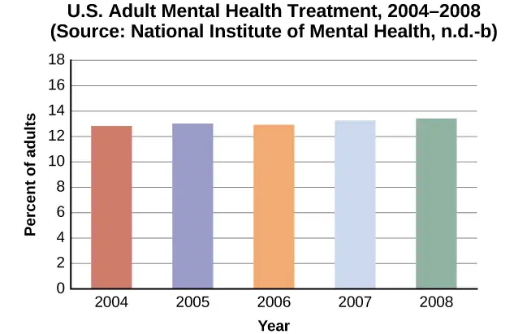
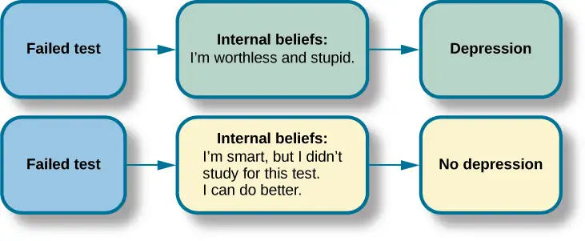

Chapter 16: Therapy and Treatment¶
Introduction¶
What comes to mind when you think about therapy for mental health issues? You might picture someone lying on a couch talking about his childhood while the therapist sits and takes notes, à la Sigmund Freud. But can you envision a therapy session in which someone is wearing virtual reality headgear to conquer a fear of snakes?
In this chapter, you will see that approaches to therapy include both psychological and biological interventions, all with the goal of alleviating distress. Because psychological problems can originate from various sources—biology, genetics, childhood experiences, conditioning, and sociocultural influences—psychologists have developed many different therapeutic techniques and approaches. The Ocean Therapy program shown in Figure 16.1 uses multiple approaches to support the mental health of veterans in the group.
There are many misconceptions and assumptions about therapy and treatment. In the same way that mental health and psychological disorders are often misunderstood and may be discounted, seeking help for problems can be a difficult and scary time for people. There is no one method that works for everyone, and those seeking help are displaying strength and courage in their decision to address a highly stigmatized and challenging issue. The goal of treatment is not to change who a person is, but to address symptoms and/or underlying conditions.
16.1 Mental Health Treatment: Past and Present¶
Learning Objectives
By the end of this section, you will be able to:
- Explain how people with psychological disorders have been treated throughout the ages
- Discuss deinstitutionalization
- Discuss the ways in which mental health services are delivered today
- Distinguish between voluntary and involuntary treatment
Before we explore the various approaches to therapy used today, let’s begin our study of therapy by looking at how many people experience mental illness and how many receive treatment. According to the U.S. Department of Health and Human Services (2017), 18.9% of U.S. adults experienced mental illness in 2017. For teens (ages 13–18), the rate is similar to that of adults, and for children ages 8–15, current estimates suggest that approximately 13% experience mental illness in a given year (National Institute of Mental Health [NIMH], 2017).
With many different treatment options available, approximately how many people receive mental health treatment per year? According to the Substance Abuse and Mental Health Services Administration (SAMHSA), in 2017, 14.8% of adults received treatment for a mental health issue (NIMH, 2017). These percentages, shown in Figure 16.2, reflect the number of adults who received care in inpatient and outpatient settings and/or used prescription medication for psychological disorders.

Children and adolescents also receive mental health services. The Centers for Disease Control and Prevention's National Health and Nutrition Examination Survey (NHANES) found that approximately half (50.6%) of children with mental disorders had received treatment for their disorder within the past year (NIMH, n.d.). However, there were some differences between treatment rates by category of disorder (Figure 16.3). For example, children with anxiety disorders were least likely to have received treatment in the past year, while children with ADHD or a conduct disorder were more likely to receive treatment. Can you think of some possible reasons for these differences in receiving treatment?
![A bar graph is titled “U.S. Child Mental Health Treatment (Ages 8–15).” Below this title the source is given: “National Institute of Mental Health, n.d.-c” The x axis is labeled “Type of disorder,” and the y axis is labeled “Percent with disorder.” For children diagnosed with “Anxiety disorders,” around 32 percent receive treatment. For “Mood disorder,” around 42 percent receive treatment. For “Conduct disorder,” around 46 percent receive treatment. For “ADHD,” around 48 percent receive treatment. For “Any disorder,” around 50 percent receive treatment.](img/cnx-psych-16-01-childtreat.webp)
Considering the many forms of treatment for mental health disorders available today, how did these forms of treatment emerge? Let’s take a look at the history of mental health treatment from the past (with some questionable approaches in light of modern understanding of mental illness) to where we are today.
Treatment in the Past¶
For much of history, people with mental illness have been treated very poorly. It was believed that mental illness was caused by demonic possession, witchcraft, or an angry god (Szasz, 1960). For example, in medieval times, abnormal behaviors were viewed as a sign that a person was possessed by demons. If someone was considered to be possessed, there were several forms of treatment to release spirits from the individual. The most common treatment was exorcism, often conducted by priests or other religious figures: Incantations and prayers were said over the person’s body, and they may have been given some medicinal drinks. Another form of treatment for extreme cases of mental illness was trephining: A small hole was made in the afflicted individual’s skull to release spirits from the body. Most people treated in this manner died. In addition to exorcism and trephining, other practices involved execution or imprisonment of people with psychological disorders. Still others were left to be homeless beggars. Generally speaking, most people who exhibited strange behaviors were greatly misunderstood and treated cruelly. The prevailing theory of psychopathology in earlier history was the idea that mental illness was the result of demonic possession by either an evil spirit or an evil god because early beliefs incorrectly attributed all unexplainable phenomena to deities deemed either good or evil.
From the late 1400s to the late 1600s, a common belief perpetuated by some religious organizations was that some people made pacts with the devil and committed horrible acts, such as eating babies (Blumberg, 2007). These people were considered to be witches and were tried and condemned by courts—they were often burned at the stake. Worldwide, it is estimated that tens of thousands of mentally ill people were killed after being accused of being witches or under the influence of witchcraft (Hemphill, 1966)
By the 18th century, people who were considered odd and unusual were placed in asylums (Figure 16.4). Asylums were the first institutions created for the specific purpose of housing people with psychological disorders, but the focus was ostracizing them from society rather than treating their disorders. Often these people were kept in windowless dungeons, beaten, chained to their beds, and had little to no contact with caregivers.
In the late 1700s, a French physician, Philippe Pinel, argued for more humane treatment of people with mental illness. He suggested that they be unchained and talked to, and that’s just what he did for patients at La Salpêtrière in Paris in 1795 (Figure 16.5). Patients benefited from this more humane treatment, and many were able to leave the hospital.
In the 19th century, Dorothea Dix led reform efforts for mental health care in the United States (Figure 16.6). She investigated how those who are mentally ill and poor were cared for, and she discovered an underfunded and unregulated system that perpetuated abuse of this population (Tiffany, 1891). Horrified by her findings, Dix began lobbying various state legislatures and the U.S. Congress for change (Tiffany, 1891). Her efforts led to the creation of the first mental asylums in the United States.
Despite reformers’ efforts, however, a typical asylum was filthy, offered very little treatment, and often kept people for decades. At Willard Psychiatric Center in upstate New York, for example, one treatment was to submerge patients in cold baths for long periods of time. Electroshock treatment was also used, and the way the treatment was administered often broke patients’ backs; in 1943, doctors at Willard administered 1,443 shock treatments (Willard Psychiatric Center, 2009). (Electroshock is now called electroconvulsive treatment, and the therapy is still used, but with safeguards and under anesthesia. A brief application of electric stimulus is used to produce a generalized seizure. Controversy continues over its effectiveness versus the side effects.) Many of the wards and rooms were so cold that a glass of water would be frozen by morning (Willard Psychiatric Center, 2009). Willard’s doors were not closed until 1995. Conditions like these remained commonplace until well into the 20th century.
Starting in 1954 and gaining popularity in the 1960s, antipsychotic medications were introduced. These proved a tremendous help in controlling the symptoms of certain psychological disorders, such as psychosis. Psychosis was a common diagnosis of individuals in mental hospitals, and it was often evidenced by symptoms like hallucinations and delusions, indicating a loss of contact with reality. Then in 1963, Congress passed and John F. Kennedy signed the Mental Retardation Facilities and Community Mental Health Centers Construction Act, which provided federal support and funding for community mental health centers (National Institutes of Health, 2013). This legislation changed how mental health services were delivered in the United States. It started the process of deinstitutionalization, the closing of large asylums, by providing for people to stay in their communities and be treated locally. In 1955, there were 558,239 severely mentally ill patients institutionalized at public hospitals (Torrey, 1997). By 1994, by percentage of the population, there were 92% fewer hospitalized individuals (Torrey, 1997).
Mental Health Treatment Today¶
Today, there are community mental health centers across the nation. They are located in neighborhoods near the homes of clients, and they provide large numbers of people with mental health services of various kinds and for many kinds of problems. Unfortunately, part of what occurred with deinstitutionalization was that those released from institutions were supposed to go to newly created centers, but the system was not set up effectively. Centers were underfunded, staff was not trained to handle severe illnesses such as schizophrenia, there was high staff burnout, and no provision was made for the other services people needed, such as housing, food, and job training. Without these supports, those people released under deinstitutionalization often ended up homeless. Even today, a large portion of the homeless population is considered to be mentally ill (Figure 16.7). Statistics show that 26% of homeless adults living in shelters experience mental illness (U.S. Department of Housing and Urban Development [HUD], 2011).
Mental health issues are also significant concerns regarding those involved in the corrections system. According to a 2006 special report by the Bureau of Justice Statistics (BJS), approximately 705,600 adults with mental health issues were incarcerated in the state prison system, and another 78,800 were incarcerated in the federal prison system. A further 479,000 were in local jails. According to the study, “people with mental illnesses are overrepresented in probation and parole populations at estimated rates ranging from two to four times the general population” (Prins & Draper, 2009, p. 23). The correctional system faces increasing burdens in managing and supporting people with mental health issues (Torrey et al., 2014). The incarceration experience itself exacerbates existing issues, triggers disturbances, or leads to long term effects such as PTSD, depression, or other disorders. While incarcerated, people are often subjected to or witness violence or sexual assault, face isolation from family, and endure other physical or emotional traumas (Edgemon & Clay-Warner, 2019).
Today, instead of asylums, there are psychiatric hospitals run by state governments and local community hospitals focused on short-term care. In all types of hospitals, the emphasis is on short-term stays, with the average length of stay being less than two weeks and often only several days. This is partly due to the very high cost of psychiatric hospitalization, which can be about $800 to $1000 per night (Stensland, Watson, & Grazier, 2012). Therefore, insurance coverage often limits the length of time a person can be hospitalized for treatment. Usually individuals are hospitalized only if they are an imminent threat to themselves or others.
Link to Learning
View this timeline that shows the history of mental institutions in the United States to learn more.
Most people who have mental illnesses are not hospitalized. If someone is feeling very depressed, complains of hearing voices, or feels anxious all the time, they might seek psychological treatment. A friend, spouse, or parent might refer someone for treatment. The individual might go see their primary care physician first and then be referred to a mental health practitioner.
Some people seek treatment because they are involved with the state’s child protective services—that is, their children have been removed from their care due to abuse or neglect. The parents might be referred to psychiatric or substance abuse facilities and the children would likely receive treatment for trauma. If the parents are interested in and capable of becoming better parents, the goal of treatment might be family reunification. For other children whose parents are unable to change—for example, the parent or parents who are heavily addicted to drugs and refuse to enter treatment—the goal of therapy might be to help the children adjust to foster care and/or adoption (Figure 16.8).
Some people seek therapy because the criminal justice system referred them or required them to go. For some individuals, for example, attending weekly counseling sessions might be a condition of parole. If an individual is mandated to attend therapy, they are seeking services involuntarily. Involuntary treatment refers to therapy that is not the individual’s choice. Other individuals might voluntarily seek treatment. Voluntary treatment means the person chooses to attend therapy to obtain relief from symptoms.
Psychological treatment can occur in a variety of places. An individual might go to a community mental health center or a practitioner in private or community practice. A child might see a school counselor, school psychologist, or school social worker. An incarcerated person might receive group therapy in prison. There are many different types of treatment providers, and licensing requirements vary from state to state. Besides psychologists and psychiatrists, there are clinical social workers, marriage and family therapists, and trained religious personnel who also perform counseling and therapy.
A range of funding sources pay for mental health treatment: health insurance, government, and private pay. In the past, even when people had health insurance, the coverage would not always pay for mental health services. This changed with the Mental Health Parity and Addiction Equity Act of 2008, which requires group health plans and insurers to make sure there is parity of mental health services (U.S. Department of Labor, n.d.). This means that co-pays, total number of visits, and deductibles for mental health and substance use treatment need to be equal to and cannot be more restrictive or harsher than those for physical illnesses and medical/surgical problems.
Finding treatment sources is also not always easy: there may be limited options, especially in rural areas and low-income urban areas; waiting lists; poor quality of care available for indigent patients; and financial obstacles such as co-pays, deductibles, and time off from work. Over 85% of the 1,669 federally designated mental health professional shortage areas are rural; often primary care physicians and law enforcement are the first-line mental health providers (Ivey, Scheffler, & Zazzali, 1998), although they do not have the specialized training of a mental health professional, who often would be better equipped to provide care. Availability, accessibility, and acceptability (the stigma attached to mental illness) are all problems in rural areas. Approximately two-thirds of those with symptoms receive no care at all (U.S. Department of Health and Human Services, 2005; Wagenfeld, Murray, Mohatt, & DeBruiynb, 1994). At the end of 2013, the U.S. Department of Agriculture announced an investment of $50 million to help improve access and treatment for mental health problems as part of the Obama administration’s effort to strengthen rural communities.
16.2 Types of Treatment¶
Learning Objectives
By the end of this section, you will be able to:
- Distinguish between psychotherapy and biomedical therapy
- Recognize various orientations to psychotherapy
- Discuss psychotropic medications and recognize which medications are used to treat specific psychological disorders
One of the goals of therapy is to help a person stop repeating and reenacting destructive patterns and to start looking for better solutions to difficult situations. This goal is reflected in the following poem:
Autobiography in Five Short Chapters by Portia Nelson (1993)
Chapter One
I walk down the street.
There is a deep hole in the sidewalk.
I fall in.
I am lost. . . . I am helpless.
It isn't my fault.
It takes forever to find a way out.Chapter Two
I walk down the same street.
There is a deep hole in the sidewalk.
I pretend I don't see it.
I fall in again.
I can't believe I am in this same place.
But, it isn't my fault.
It still takes a long time to get out.Chapter Three
I walk down the same street.
There is a deep hole in the sidewalk.
I see it is there.
I still fall in . . . it's a habit . . . but,
my eyes are open.
I know where I am.
It is my fault.
I get out immediately.Chapter Four
I walk down the same street.
There is a deep hole in the sidewalk.
I walk around it.Chapter Five
I walk down another street.
Two types of therapy are psychotherapy and biomedical therapy. Both types of treatment help people with mental health issues, such as depression, anxiety, and schizophrenia. Psychotherapy is a psychological treatment that employs various methods to help someone overcome personal problems, or to attain personal growth. In modern practice, it has evolved into what is known as psychodynamic therapy, which will be discussed later. Biomedical therapy involves medication and/or medical procedures to treat psychological disorders. First, we will explore the various psychotherapeutic orientations outlined in Table 16.1 (many of these orientations were discussed in the Introduction chapter).
Table 16.1
| Various Psychotherapy Techniques | ||
|---|---|---|
| Type | Description | Example |
| Psychodynamic psychotherapy | Talk therapy based on belief that the unconscious and childhood conflicts impact behavior | Patient talks about their past |
| Play therapy | Psychoanalytical therapy wherein interaction with toys is used instead of talk; used in child therapy | Patient (child) acts out family scenes with dolls |
| Behavior therapy | Principles of learning applied to change undesirable behaviors | Patient learns to overcome fear of elevators through several stages of relaxation techniques |
| Cognitive therapy | Awareness of cognitive process helps patients eliminate thought patterns that lead to distress | Patient learns not to overgeneralize failure based on single failure |
| Cognitive-behavioral therapy | Work to change cognitive distortions and self-defeating behaviors | Patient learns to identify self-defeating behaviors to overcome an eating disorder |
| Humanistic therapy | Increase self-awareness and acceptance through focus on conscious thoughts | Patient learns to articulate thoughts that keep them from achieving their goals |
Psychotherapy Techniques: Psychoanalysis¶
Psychoanalysis was developed by Sigmund Freud and was the first form of psychotherapy. It was the dominant therapeutic technique in the early 20th century, but it has since waned significantly in popularity. Freud believed most of our psychological problems are the result of repressed impulses and trauma experienced in childhood, and he believed psychoanalysis would help uncover long-buried feelings. In a psychoanalyst’s office, you might see a patient lying on a couch speaking of dreams or childhood memories, and the therapist using various Freudian methods such as free association and dream analysis (Figure 16.9). In free association, the patient relaxes and then says whatever comes to mind at the moment. However, Freud felt that the ego would at times try to block, or repress, unacceptable urges or painful conflicts during free association. Consequently, a patient would demonstrate resistance to recalling these thoughts or situations. In dream analysis, a therapist interprets the underlying meaning of dreams.
Psychoanalysis is a therapy approach that typically takes years. Over the course of time, the patient reveals a great deal about himself to the therapist. Freud suggested that during this patient-therapist relationship, the patient comes to develop strong feelings for the therapist—maybe positive feelings, maybe negative feelings. Freud called this transference: the patient transfers all the positive or negative emotions associated with the patient’s other relationships to the psychoanalyst. For example, Crystal is seeing a psychoanalyst. During the years of therapy, she comes to see her therapist as a father figure. She transfers her feelings about her father onto her therapist, perhaps in an effort to gain the love and attention she did not receive from her own father.
Today, Freud’s psychoanalytical perspective has been expanded upon by the developments of subsequent theories and methodologies: the psychodynamic perspective. This approach to therapy remains centered on the role of people’s internal drives and forces, but treatment is less intensive than Freud’s original model.
Link to Learning
View a brief video overview of Freud and his theory of personality to learn more.
Psychotherapy: Play Therapy¶
Play therapy is often used with children since they are not likely to sit on a couch and recall their dreams or engage in traditional talk therapy. This technique uses a therapeutic process of play to “help clients prevent or resolve psychosocial difficulties and achieve optimal growth” (O’Connor, 2000, p. 7). The idea is that children play out their hopes, fantasies, and traumas while using dolls, stuffed animals, and sandbox figurines (Figure 16.10). Play therapy can also be used to help a therapist make a diagnosis. The therapist observes how the child interacts with toys (e.g., dolls, animals, and home settings) in an effort to understand the roots of the child’s disturbed behavior. Play therapy can be nondirective or directive. In nondirective play therapy, children are encouraged to work through their problems by playing freely while the therapist observes (LeBlanc & Ritchie, 2001). In directive play therapy, the therapist provides more structure and guidance in the play session by suggesting topics, asking questions, and even playing with the child (Harter, 1977).
Psychotherapy: Behavior Therapy¶
In psychoanalysis, therapists help their patients look into their past to uncover repressed feelings. In behavior therapy, a therapist employs principles of learning to help clients change undesirable behaviors—rather than digging deeply into one’s unconscious. Therapists with this orientation believe that dysfunctional behaviors, like phobias and bedwetting, can be changed by teaching clients new, more constructive behaviors. Behavior therapy employs both classical and operant conditioning techniques to change behavior.
One type of behavior therapy utilizes classical conditioning techniques. Therapists using these techniques believe that dysfunctional behaviors are conditioned responses. Applying the conditioning principles developed by Ivan Pavlov, these therapists seek to recondition their clients and thus change their behavior. Emmie is eight years old, and frequently wets her bed at night. She’s been invited to several sleepovers, but she won’t go because of her problem. Using a type of conditioning therapy, Emmie begins to sleep on a liquid-sensitive bed pad that is hooked to an alarm. When moisture touches the pad, it sets off the alarm, waking up Emmie. When this process is repeated enough times, Emmie develops an association between urinary relaxation and waking up, and this stops the bedwetting. Emmie has now gone three weeks without wetting her bed and is looking forward to her first sleepover this weekend.
One commonly used classical conditioning therapeutic technique is counterconditioning: a client learns a new response to a stimulus that has previously elicited an undesirable behavior. Two counterconditioning techniques are aversive conditioning and exposure therapy. Aversive conditioning uses an unpleasant stimulus to stop an undesirable behavior. Therapists apply this technique to eliminate addictive behaviors, such as smoking, nail biting, and drinking. In aversion therapy, clients will typically engage in a specific behavior (such as nail biting) and at the same time are exposed to something unpleasant, such as a mild electric shock or a bad taste. After repeated associations between the unpleasant stimulus and the behavior, the client can learn to stop the unwanted behavior.
Aversion therapy has been used effectively for years in the treatment of alcoholism (Davidson, 1974; Elkins, 1991; Streeton & Whelan, 2001). One common way this occurs is through a chemically based substance known as Antabuse. When a person takes Antabuse and then consumes alcohol, uncomfortable side effects result including nausea, vomiting, increased heart rate, heart palpitations, severe headache, and shortness of breath. Antabuse is repeatedly paired with alcohol until the client associates alcohol with unpleasant feelings, which decreases the client’s desire to consume alcohol. Antabuse creates a conditioned aversion to alcohol because it replaces the original pleasure response with an unpleasant one.
In exposure therapy, a therapist seeks to treat clients’ fears or anxiety by presenting them with the object or situation that causes their problem, with the idea that they will eventually get used to it. This can be done via reality, imagination, or virtual reality. Exposure therapy was first reported in 1924 by Mary Cover Jones, who is considered the mother of behavior therapy. Jones worked with a boy named Peter who was afraid of rabbits. Her goal was to replace Peter’s fear of rabbits with a conditioned response of relaxation, which is a response that is incompatible with fear (Figure 16.11). How did she do it? Jones began by placing a caged rabbit on the other side of a room with Peter while he ate his afternoon snack. Over the course of several days, Jones moved the rabbit closer and closer to where Peter was seated with his snack. After two months of being exposed to the rabbit while relaxing with his snack, Peter was able to hold the rabbit and pet it while eating (Jones, 1924).
![This figure, titled “Exposure Therapy,” illustrates the exposure therapy strategy of Mary Cover Jones to rid a person of the fear of rabbits. The first of four levels depicts an image of a person and a rabbit with an equals sign between them. Under the rabbit reads “conditioned stimulus (CS),” and under the person reads “fear of rabbits.” The second level depicts an image of milk and cookies, labeled “unconditioned stimulus (US),” and on the other side of an equals sign there is a picture of the same person labeled “unconditioned response (UR).” The third level shows the milk and cookies, labeled “unconditioned stimulus (US),” and rabbit, labeled “conditioned stimulus (CS),” to the left and right of a plus sign, with the person on the other side of an equals sign. The label “unconditioned response (UR) is below the person.” The final level shows the person and the rabbit separated by an equals sign. This time the rabbit is labeled “conditioned stimulus (CS)” and the person is labeled “conditioned response (CR).”](img/cnx-psych-16-02-conditioning.webp)
Thirty years later, Joseph Wolpe (1958) refined Jones’s techniques, giving us systematic desensitization. Using this method, a person creates a hierarchy of anxiety, ranging from the least-anxiety-producing stimulus to the feared object. These activities are paired with relaxation techniques, which are taught to the client beforehand and used during the graduated exposures. The idea is that a person cannot be nervous and relaxed at the same time. Therefore, if they can learn to relax when they are facing environmental stimuli that make them nervous or fearful, they can eventually eliminate the unwanted fear response. (Figure 16.12).
![Figure (a): A close-up picture of a very large spider on a person’s arm is shown. The person is using its other hand to hold up two of the spider’s legs. Figure (b): A chart has two columns: Behavior and Fear Rating. The first behavior is look at a photo of a spider with a fear rating of 15. The second behavior is look at a real spider through clear glass with a fear rating of 35. The third behavior is hold a box that contains a spider with a fear rating of 55. The fourth behavior is watch a spider crawl across the floor with a fear rating of 65. The fifth behavior is watch a spider crawl across your desk with a fear rating of 75. The sixth behavior is hold a spider with gloved hands with a fear rating of 90. The seventh behavior is hold a spider with bare hands with a fear rating of 100.](img/cnx-psych-16-02-spider.webp)
For example, Jayden is terrified of elevators. Nothing bad has ever happened to him on an elevator, but he’s so afraid of elevators that he will always take the stairs. That wasn’t a problem when Jayden worked on the second floor of an office building, but now he has a new job—on the 29th floor of a skyscraper in downtown Los Angeles. Jayden knows he can’t climb 29 flights of stairs in order to get to work each day, so he decided to see a behavior therapist for help. The therapist asks Jayden to first construct a hierarchy of elevator-related situations that elicit fear and anxiety. They range from situations of mild anxiety such as being nervous around the other people in the elevator, to the fear of getting an arm caught in the door, to panic-provoking situations such as getting trapped or the cable snapping. Next, the therapist uses progressive relaxation. They teach Jayden how to relax each of his muscle groups so that he achieves a drowsy, relaxed, and comfortable state of mind. Once he’s in this state, the therapist asks Jayden to imagine a mildly anxiety-provoking situation. Jayden is standing in front of the elevator thinking about pressing the call button.
If this scenario causes Jayden anxiety, he lifts his finger. The therapist would then tell Jayden to forget the scene and return to his relaxed state. They repeat this scenario over and over until Jayden can imagine himself pressing the call button without anxiety. Over time the therapist and Jayden use progressive relaxation and imagination to proceed through all of the situations on Jayden’s hierarchy until he becomes desensitized to each one. After this, Jayden and the therapist begin to practice what he only previously envisioned in therapy, gradually going from pressing the button to actually riding an elevator. The goal is that Jayden will soon be able to take the elevator all the way up to the 29th floor of his office without feeling any anxiety.
Sometimes, it’s too impractical, expensive, or embarrassing to re-create anxiety-producing situations, so a therapist might employ virtual reality exposure therapy by using a simulation to help conquer fears. Virtual reality exposure therapy has been used effectively to treat numerous anxiety disorders such as the fear of public speaking, claustrophobia (fear of enclosed spaces), aviophobia (fear of flying), and post-traumatic stress disorder (PTSD), a trauma and stressor-related disorder (Gerardi, Cukor, Difede, Rizzo, & Rothbaum, 2010).
Link to Learning
A new virtual reality exposure therapy is being used to treat PTSD in soldiers. Virtual Iraq is a simulation that mimics Middle Eastern cities and desert roads with situations similar to those soldiers experienced while deployed in Iraq. This method of virtual reality exposure therapy has been effective in treating PTSD for combat veterans. Approximately 80% of participants who completed treatment saw clinically significant reduction in their symptoms of PTSD, anxiety, and depression (Rizzo et al., 2010). Watch this Virtual Iraq video that shows soldiers being treated via simulation to learn more.
Some behavior therapies employ operant conditioning. Recall what you learned about operant conditioning: We have a tendency to repeat behaviors that are reinforced. What happens to behaviors that are not reinforced? They become extinguished. These principles, defined by Skinner as operant conditioning, can be applied to help people with a wide range of psychological problems.
One popular operant conditioning intervention is called the token economy. This involves a controlled setting where individuals are reinforced for desirable behaviors with tokens, such as a poker chip, that can be exchanged for items or privileges. Token economies are often used in psychiatric hospitals to increase patient cooperation and activity levels. Patients are rewarded with tokens when they engage in positive behaviors (e.g., making their beds, brushing their teeth, coming to the cafeteria on time, and socializing with other patients). They can later exchange the tokens for extra TV time, private rooms, visits to the canteen, and so on (Dickerson, Tenhula, & Green-Paden, 2005).
Psychotherapy: Cognitive Therapy¶
Cognitive therapy is a form of psychotherapy that focuses on how a person’s thoughts lead to feelings of distress. The idea behind cognitive therapy is that how you think determines how you feel and act. Cognitive therapists help their clients change dysfunctional thoughts in order to relieve distress. They help a client see how they misinterpret a situation (cognitive distortion). For example, a client may overgeneralize. Because a person failed one test in Psychology 101, they feel stupid and worthless. These thoughts then cause their mood to worsen. Therapists also help clients recognize when they blow things out of proportion. Because Ray failed his Psychology 101 test, he has concluded that he’s going to fail the entire course and probably flunk out of college altogether. These errors in thinking have contributed to Ray’s feelings of distress. His therapist will help him challenge these irrational beliefs, focus on their illogical basis, and correct them with more logical and rational thoughts and beliefs.
Cognitive therapy was developed by psychiatrist Aaron Beck in the 1960s. His initial focus was on depression and how a client’s self-defeating attitude served to maintain a depression despite positive factors in her life (Beck, Rush, Shaw, & Emery, 1979) (Figure 16.13). Through questioning, a cognitive therapist can help a client recognize dysfunctional ideas, challenge catastrophizing thoughts about themselves and their situations, and find a more positive way to view things (Beck, 2011).

Link to Learning
View a brief video in which Judith Beck talks about cognitive therapy and conducts a session with a client.
Psychotherapy: Cognitive-Behavioral Therapy¶
Cognitive-behavioral therapists focus much more on present issues than on a patient’s childhood or past, as in other forms of psychotherapy. One of the first forms of cognitive-behavioral therapy was rational emotive therapy (RET), which was founded by Albert Ellis and grew out of his dislike of Freudian psychoanalysis (Daniel, n.d.). Behaviorists such as Joseph Wolpe also influenced Ellis’s therapeutic approach (National Association of Cognitive-Behavioral Therapists, 2009).
Cognitive-behavioral therapy (CBT) helps clients examine how their thoughts affect their behavior. It aims to change cognitive distortions and self-defeating behaviors. In essence, this approach is designed to change the way people think as well as how they act. It is similar to cognitive therapy in that CBT attempts to make individuals aware of their irrational and negative thoughts and helps people replace them with new, more positive ways of thinking. It is also similar to behavior therapies in that CBT teaches people how to practice and engage in more positive and healthy approaches to daily situations. In total, hundreds of studies have shown the effectiveness of cognitive-behavioral therapy in the treatment of numerous psychological disorders such as depression, PTSD, anxiety disorders, eating disorders, bipolar disorder, and substance abuse (Beck Institute for Cognitive Behavior Therapy, n.d.). For example, CBT has been found to be effective in decreasing levels of hopelessness and suicidal thoughts in previously suicidal teenagers (Alavi, Sharifi, Ghanizadeh, & Dehbozorgi, 2013). Cognitive-behavioral therapy has also been effective in reducing PTSD in specific populations, such as transit workers (Lowinger & Rombom, 2012).
Cognitive-behavioral therapy aims to change cognitive distortions and self-defeating behaviors using techniques like the ABC model. With this model, there is an Action (sometimes called an activating event), the Belief about the event, and the Consequences of this belief. Let’s say Jon and Joe both go to a party. Jon and Joe each have met an interesting person at the party and spend a few hours chatting with them. At the end of the party, Jon and Joe ask to exchange phone numbers with the person they've been talking to, and the request is refused. Both Jon and Joe are surprised, as they thought things were going well. What can Jon and Joe tell themselves about why the person was not interested? Let’s say Jon tells himself he is a loser, or is ugly, or “has no game.” Jon then gets depressed and decides not to go to another party, which starts a cycle that keeps him depressed. Joe tells himself that he had bad breath, goes out and buys a new toothbrush, goes to another party, and meets someone new.
Jon’s belief about what happened results in a consequence of further depression, whereas Joe’s belief does not. Jon is internalizing the attribution or reason for the rebuffs, which triggers his depression. On the other hand, Joe is externalizing the cause, so his thinking does not contribute to feelings of depression. Cognitive-behavioral therapy examines specific maladaptive and automatic thoughts and cognitive distortions. Some examples of cognitive distortions are all-or-nothing thinking, overgeneralization, and jumping to conclusions. In overgeneralization, someone takes a small situation and makes it huge—for example, instead of saying, “This particular person was not interested in me,” the man says, “I am ugly, a loser, and no one is ever going to be interested in me.”
All or nothing thinking, which is a common type of cognitive distortion for people suffering from depression, reflects extremes. In other words, everything is black or white. After being turned down for a date, Jon begins to think, “No one will ever go out with me. I’m going to be alone forever.” He begins to feel anxious and sad as he contemplates his future.
The third kind of distortion involves jumping to conclusions—assuming that people are thinking negatively about you or reacting negatively to you, even though there is no evidence. Consider the example of Savannah and Hillaire, who recently met at a party. They have a lot in common, and Savannah thinks they could become friends. She calls Hillaire to invite her for coffee. Since Hillaire doesn’t answer, Savannah leaves her a message. Several days go by and Savannah never hears back from her potential new friend. Maybe Hillaire never received the message because she lost her phone or she is too busy to return the phone call. But if Savannah believes that Hillaire didn’t like Savannah or didn’t want to be her friend, she is demonstrating the cognitive distortion of jumping to conclusions.
How effective is CBT? One client said this about his cognitive-behavioral therapy:
I have had many painful episodes of depression in my life, and this has had a negative effect on my career and has put considerable strain on my friends and family. The treatments I have received, such as taking antidepressants and psychodynamic counseling, have helped [me] to cope with the symptoms and to get some insights into the roots of my problems. CBT has been by far the most useful approach I have found in tackling these mood problems. It has raised my awareness of how my thoughts impact on my moods. How the way I think about myself, about others and about the world can lead me into depression. It is a practical approach, which does not dwell so much on childhood experiences, whilst acknowledging that it was then that these patterns were learned. It looks at what is happening now, and gives tools to manage these moods on a daily basis. (Martin, 2007, n.p.)
Psychotherapy: Humanistic Therapy¶
Humanistic psychology focuses on helping people achieve their potential. So it makes sense that the goal of humanistic therapy is to help people become more self-aware and accepting of themselves. In contrast to psychoanalysis, humanistic therapists focus on conscious rather than unconscious thoughts. They also emphasize the patient’s present and future, as opposed to exploring the patient’s past.
Psychologist Carl Rogers developed a therapeutic orientation known as Rogerian, or client-centered therapy. Note the change from patients to clients. Rogers (1951) felt that the term patient suggested the person seeking help was sick and looking for a cure. Since this is a form of nondirective therapy, a therapeutic approach in which the therapist does not give advice or provide interpretations but helps the person to identify conflicts and understand feelings, Rogers (1951) emphasized the importance of the person taking control of his own life to overcome life’s challenges.
In client-centered therapy, the therapist uses the technique of active listening. In active listening, the therapist acknowledges, restates, and clarifies what the client expresses. Therapists also practice what Rogers called unconditional positive regard, which involves not judging clients and simply accepting them for who they are. Rogers (1951) also felt that therapists should demonstrate genuineness, empathy, and acceptance toward their clients because this helps people become more accepting of themselves, which results in personal growth.
Evaluating Various Forms of Psychotherapy¶
How can we assess the effectiveness of psychotherapy? Is one technique more effective than another? For anyone considering therapy, these are important questions. According to the American Psychological Association, three factors work together to produce successful treatment. The first is the use of evidence-based treatment that is deemed appropriate for your particular issue. The second important factor is the clinical expertise of the psychologist or therapist. The third factor is your own characteristics, values, preferences, and culture. Many people begin psychotherapy feeling like their problem will never be resolved; however, psychotherapy helps people see that they can do things to make their situation better. Psychotherapy can help reduce a person’s anxiety, depression, and maladaptive behaviors. Through psychotherapy, individuals can learn to engage in healthy behaviors designed to help them better express emotions, improve relationships, think more positively, and perform more effectively at work or school.
Many studies have explored the effectiveness of psychotherapy. For example, one large-scale study that examined 16 meta-analyses of CBT reported that it was equally effective or more effective than other therapies in treating PTSD, generalized anxiety disorder, depression, and social phobia (Butlera, Chapmanb, Formanc, & Becka, 2006). Another study found that CBT was as effective at treating depression (43% success rate) as prescription medication (50% success rate) compared to the placebo rate of 25% (DeRubeis et al., 2005). Another meta-analysis found that psychodynamic therapy was also as effective at treating these types of psychological issues as CBT (Shedler, 2010). However, no studies have found one psychotherapeutic approach more effective than another (Abbass, Kisely, & Kroenke, 2006; Chorpita et al., 2011), nor have they shown any relationship between a client’s treatment outcome and the level of the clinician’s training or experience (Wampold, 2007). Regardless of which type of psychotherapy an individual chooses, one critical factor that determines the success of treatment is the person’s relationship with the psychologist or therapist.
Biomedical Therapies¶
Individuals can be prescribed biologically based treatments or psychotropic medications that are used to treat mental disorders. While these are often used in combination with psychotherapy, they are also taken by individuals not in therapy. This is known as biomedical therapy. Medications used to treat psychological disorders are called psychotropic medications and are prescribed by medical doctors, including psychiatrists. In Louisiana and New Mexico, psychologists are able to prescribe some types of these medications (American Psychological Association, 2014).
Different types and classes of medications are prescribed for different disorders. An individual with depression might be given an antidepressant, an individual with bipolar disorder might be given a mood stabilizer, and an individual with schizophrenia might be given an antipsychotic. These medications treat the symptoms of a psychological disorder by altering the levels or effects of neurotransmitters. For example, each type of antidepressant affects a different neurotransmitter, such as SSRI (selective serotonin reuptake inhibitor) antidepressants that increase the level of the neurotransmitter serotonin, and SNRI (serotonin-norepinephrine reuptake inhibitor) antidepressants that increase the levels of both serotonin and norepinephrine. They can help people feel better so that they can function on a daily basis, but they do not cure the disorder. Some people may only need to take a psychotropic medication for a short period of time. Others with severe disorders like bipolar disorder or schizophrenia may need to take psychotropic medication for a long time.
Psychotropic medications are a popular treatment option for many types of disorders, and research suggests that they are most effective when combined with psychotherapy. This is especially true for the most common mental disorders, such as depressive and anxiety disorders (Cuijpers et al, 2014). When considering adding medication as a treatment option, individuals should know that some psychotropic medications have very concerning side effects. Table 16.2 shows the commonly prescribed types of medications, how they are used, and some of the potential side effects that may occur.
Table 16.2
| Some Commonly Prescribed Psychotropic Medications | ||||
|---|---|---|---|---|
| Type of Medication | Used to Treat | Brand Names of Commonly Prescribed Medications | How They Work | Side Effects |
| Antipsychotics (developed in the 1950s) | Schizophrenia and other types of severe thought disorders | Haldol, Mellaril, Prolixin, Thorazine | Treat positive psychotic symptoms such as auditory and visual hallucinations, delusions, and paranoia by blocking the neurotransmitter dopamine | Long-term use can lead to tardive dyskinesia, involuntary movements of the arms, legs, tongue and facial muscles, resulting in Parkinson’s-like tremors |
| Atypical Antipsychotics (developed in the late 1980s) | Schizophrenia and other types of severe thought disorders | Abilify, Risperdal, Clozaril | Treat the negative symptoms of schizophrenia, such as withdrawal and apathy, by targeting both dopamine and serotonin receptors; newer medications may treat both positive and negative symptoms | Can increase the risk of obesity and diabetes as well as elevate cholesterol levels; constipation, dry mouth, blurred vision, drowsiness, and dizziness |
| Anti-depressants | Depression and increasingly for anxiety | Paxil, Prozac, Zoloft (selective serotonin reuptake inhibitors, [SSRIs]); Tofranil and Elavil (tricyclics) | Alter levels of neurotransmitters such as serotonin and norepinephrine | SSRIs: headache, nausea, weight gain, drowsiness, reduced sex drive Tricyclics: dry mouth, constipation, blurred vision, drowsiness, reduced sex drive, increased risk of suicide |
| Anti-anxiety agents | Anxiety and agitation that occur in OCD, PTSD, panic disorder, and social phobia | Xanax, Valium, Ativan (Benzodiazepines) Buspar (non-Benzodiazepine) | Depress central nervous system activity | Drowsiness, dizziness, headache, fatigue, lightheadedness |
| Mood Stabilizers | Bipolar disorder | Lithium, Depakote, Lamictal, Tegretol | Treat episodes of mania as well as depression | Excessive thirst, irregular heartbeat, itching/rash, swelling (face, mouth, and extremities), nausea, loss of appetite |
| Stimulants | ADHD | Adderall, Ritalin | Improve ability to focus on a task and maintain attention | Decreased appetite, difficulty sleeping, stomachache, headache |
Another biologically based treatment that continues to be used, although infrequently, is electroconvulsive therapy (ECT) (formerly known by its unscientific name as electroshock therapy). It involves using an electrical current to induce seizures to help alleviate the effects of severe depression. The exact mechanism is unknown, although it does help alleviate symptoms for people with severe depression who have not responded to traditional drug therapy (Pagnin, de Queiroz, Pini, & Cassano, 2004). About 85% of people treated with ECT improve (Reti, n.d.). However, the memory loss associated with repeated administrations has led to it being implemented as a last resort (Donahue, 2000; Prudic, Peyser, & Sackeim, 2000). A more recent alternative is transcranial magnetic stimulation (TMS), a procedure approved by the FDA in 2008 that uses magnetic fields to stimulate nerve cells in the brain to improve depression symptoms; it is used when other treatments have not worked (Mayo Clinic, 2012).
Dig Deeper: Evidence-based Practice
A buzzword in therapy today is evidence-based practice. However, it’s not a novel concept but one that has been used in medicine for at least two decades. Evidence-based practice is used to reduce errors in treatment selection by making clinical decisions based on research (Sackett & Rosenberg, 1995). In any case, evidence-based treatment is on the rise in the field of psychology. So what is it, and why does it matter? In an effort to determine which treatment methodologies are evidenced-based, professional organizations such as the American Psychological Association (APA) have recommended that specific psychological treatments be used to treat certain psychological disorders (Chambless & Ollendick, 2001). According to the APA (2005), “Evidence-based practice in psychology (EBPP) is the integration of the best available research with clinical expertise in the context of patient characteristics, culture, and preferences” (p. 1).
The foundational idea behind evidence based treatment is that best practices are determined by research evidence that has been compiled by comparing various forms of treatment (Charman & Barkham, 2005). These treatments are then operationalized and placed in treatment manuals—trained therapists follow these manuals. The benefits are that evidence-based treatment can reduce variability between therapists to ensure that a specific approach is delivered with integrity (Charman & Barkham, 2005). Therefore, clients have a higher chance of receiving therapeutic interventions that are effective at treating their specific disorder. While EBPP is based on randomized control trials, critics of EBPP reject it stating that the results of trials cannot be applied to individuals and instead determinations regarding treatment should be based on a therapist’s judgment (Mullen & Streiner, 2004).
16.3 Treatment Modalities¶
Learning Objectives
By the end of this section, you will be able to:
- Distinguish between the various modalities of treatment
- Discuss benefits of group therapy
Once a person seeks treatment, whether voluntarily or involuntarily, they have an intake done to assess their clinical needs. An intake is the therapist’s first meeting with the client. The therapist gathers specific information to address the client’s immediate needs, such as the presenting problem, the client’s support system, and insurance status. The therapist informs the client about confidentiality, fees, and what to expect in treatment. Confidentiality means the therapist cannot disclose confidential communications to any third party unless mandated or permitted by law to do so. During the intake, the therapist and client will work together to discuss treatment goals. Then a treatment plan will be formulated, usually with specific measurable objectives. Also, the therapist and client will discuss how treatment success will be measured and the estimated length of treatment. There are several different modalities of treatment (Figure 16.14): Individual therapy, family therapy, couples therapy, and group therapy are the most common.
Individual Therapy¶
In individual therapy, also known as individual psychotherapy or individual counseling, the client and clinician meet one-on-one (usually from 45 minutes to 1 hour). These meetings typically occur weekly or every other week, and sessions are conducted in a confidential and caring environment (Figure 16.15). The clinician will work with clients to help them explore their feelings, work through life challenges, identify aspects of themselves and their lives that they wish to change, and set goals to help them work towards these changes. A client might see a clinician for only a few sessions, or the client may attend individual therapy sessions for a year or longer. The amount of time spent in therapy depends on the needs of the client as well as her personal goals.
Group Therapy¶
In group therapy, a clinician meets together with several clients with similar problems (Figure 16.16). When children are placed in group therapy, it is particularly important to match clients for age and problems. One benefit of group therapy is that it can help decrease a client’s shame and isolation about a problem while offering needed support, both from the therapist and other members of the group (American Psychological Association, 2014). A nine-year-old sexual abuse victim, for example, may feel very embarrassed and ashamed. If he is placed in a group with other sexually abused boys, he will realize that he is not alone. A child struggling with poor social skills would likely benefit from a group with a specific curriculum to foster social skills. A woman suffering from post-partum depression could feel less guilty and more supported by being in a group with similar women.
Group therapy also has some specific limitations. Members of the group may be afraid to speak in front of other people because sharing secrets and problems with complete strangers can be stressful and overwhelming. There may be personality clashes and arguments among group members. There could also be concerns about confidentiality: Someone from the group might share what another participant said to people outside of the group.
Another benefit of group therapy is that members can confront each other about their patterns. For those with some types of problems, such as sexual abusers, group therapy is the recommended treatment. Group treatment for this population is considered to have several benefits:
Group treatment is more economical than individual, couples, or family therapy. Sexual abusers often feel more comfortable admitting and discussing their offenses in a treatment group where others are modeling openness. Clients often accept feedback about their behavior more willingly from other group members than from therapists. Finally, clients can practice social skills in group treatment settings. (McGrath, Cumming, Burchard, Zeoli, & Ellerby, 2009)
Groups that have a strong educational component are called psycho-educational groups. For example, a group for children whose parents have cancer might discuss in depth what cancer is, types of treatment for cancer, and the side effects of treatments, such as hair loss. Often, group therapy sessions with children take place in school. They are led by a school counselor, a school psychologist, or a school social worker. Groups might focus on test anxiety, social isolation, self-esteem, bullying, or school failure (Shechtman, 2002). Whether the group is held in school or in a clinician’s office, group therapy has been found to be effective with children facing numerous kinds of challenges (Shechtman, 2002).
During a group session, the entire group could reflect on an individual’s problem or difficulties, and others might disclose what they have done in that situation. When a clinician is facilitating a group, the focus is always on making sure that everyone benefits and participates in the group and that no one person is the focus of the entire session. Groups can be organized in various ways: some have an overarching theme or purpose, some are time-limited, some have open membership that allows people to come and go, and some are closed. Some groups are structured with planned activities and goals, while others are unstructured: There is no specific plan, and group members themselves decide how the group will spend its time and on what goals it will focus. This can become a complex and emotionally charged process, but it is also an opportunity for personal growth (Page & Berkow, 1994).
Couples Therapy¶
Couples therapy involves two people in an intimate relationship who are having difficulties and are trying to resolve them (Figure 16.17). The couple may be dating, partnered, engaged, or married. The primary therapeutic orientation used in couples counseling is cognitive-behavioral therapy (Rathus & Sanderson, 1999). Couples meet with a therapist to discuss conflicts and/or aspects of their relationship that they want to change. The therapist helps them see how their individual backgrounds, beliefs, and actions are affecting their relationship. Often, a therapist tries to help the couple resolve these problems, as well as implement strategies that will lead to a healthier and happier relationship, such as how to listen, how to argue, and how to express feelings. However, sometimes, after working with a therapist, a couple will realize that they are too incompatible and will decide to separate. Some couples seek therapy to work out their problems, while others attend therapy to determine whether staying together is the best solution. Counseling couples in a high-conflict and volatile relationship can be difficult. In fact, psychologists Peter Pearson and Ellyn Bader, who founded the Couples Institute in Palo Alto, California, have compared the experience of the clinician in couples’ therapy to “piloting a helicopter in a hurricane” (Weil, 2012, para. 7).
Family Therapy¶
Family therapy is a special form of group therapy, consisting of one or more families. Although there are many theoretical orientations in family therapy, one of the most predominant is the systems approach. The family is viewed as an organized system, and each individual within the family is a contributing member who creates and maintains processes within the system that shape behavior (Minuchin, 1985). Each member of the family influences and is influenced by the others. The goal of this approach is to enhance the growth of each family member as well as that of the family as a whole.
Often, dysfunctional patterns of communication that develop between family members can lead to conflict. A family with this dynamic might wish to attend therapy together rather than individually. In many cases, one member of the family has problems that detrimentally affect everyone. For example, a mother’s depression, teen daughter’s eating disorder, or father’s alcohol dependence could affect all members of the family. The therapist would work with all members of the family to help them cope with the issue, and to encourage resolution and growth in the case of the individual family member with the problem.
With family therapy, the nuclear family (i.e., parents and children) or the nuclear family plus whoever lives in the household (e.g., grandparent) come into treatment. Family therapists work with the whole family unit to heal the family. There are several different types of family therapy. In structural family therapy, the therapist examines and discusses the boundaries and structure of the family: who makes the rules, who sleeps in the bed with whom, how decisions are made, and what are the boundaries within the family. In some families, the parents do not work together to make rules, or one parent may undermine the other, leading the children to act out. The therapist helps them resolve these issues and learn to communicate more effectively.
Link to Learning
Watch this video of a structural family session to learn more.
In strategic family therapy, the goal is to address specific problems within the family that can be dealt with in a relatively short amount of time. Typically, the therapist would guide what happens in the therapy session and design a detailed approach to resolving each member’s problem (Madanes, 1991).
16.4 Substance-Related and Addictive Disorders: A Special Case¶
Learning Objectives
By the end of this section, you will be able to:
- Recognize the goal of substance-related and addictive disorders treatment
- Discuss what makes for effective treatment
- Describe how comorbid disorders are treated
Addiction is often viewed as a chronic disease (Figure 16.18). The choice to use a substance is initially voluntary; however, because chronic substance use can permanently alter the neural structure in the prefrontal cortex, an area of the brain associated with decision-making and judgment, a person becomes driven to use drugs and/or alcohol (Muñoz-Cuevas, Athilingam, Piscopo, & Wilbrecht, 2013). This helps explain why relapse rates tend to be high. About 40%–60% of individuals relapse, which means they return to abusing drugs and/or alcohol after a period of improvement (National Institute on Drug Abuse [NIDA], 2008).
![A chart labeled “Prevalence of Drug Use by Age Group” graphs “Age (years)” on the x axis and “Percentage of use” on the y axis. Note that the following percentages are estimates. According to this chart, 10 percent of people in the age range of 12–17 use illicit drugs, compared to 22 percent usage in the age range of 18–25, and 7 percent usage in the age range of 26 and older. 7.5 percent of people in the age range of 12–17 use marijuana, compared to 18 percent usage in the age range of 18–25, and 5 percent usage in the age range of 26 and older. 3 percent of people in the age range of 12–17 use psychotherapeutics, compared to 6 percent usage in the age range of 18–25, and 2.5 percent usage in the age range of 26 and older. 1 percent of people in the age range of 12–17 use inhalants. This number steadily drops off to 0 percent in the 26 and older age group. 1 percent of people in the age range of 12–17 use hallucinogens, compared to 2.5 percent usage in the age range of 18–25, and almost 0 percent usage in the age range of 26 and older. Cocaine use in the age range of 18–25 is around 2 percent, and it drops off to nearly 0 percent by the age range of 26 and older.](img/cnx-psych-16-04-drugsurvey.webp)
The goal of substance-related treatment is to help a person with an addiction stop compulsive drug-seeking behaviors (NIDA, 2012). This means a person with addiction will need long-term treatment, similar to a person battling a chronic physical disease such as hypertension or diabetes. Treatment usually includes behavioral therapy and/or medication, depending on the individual (NIDA, 2012). Specialized therapies have also been developed for specific types of substance-related disorders, including alcohol, cocaine, and opioids (McGovern & Carroll, 2003). Substance-related treatment is considered much more cost-effective than incarceration or not treating those with addictions (NIDA, 2012) (Figure 16.19).
What Makes Treatment Effective?¶
Specific factors make substance-related treatment much more effective. One factor is duration of treatment. Generally, a person with addiction needs to be in treatment for at least three months to achieve a positive outcome (Simpson, 1981; Simpson, Joe, & Bracy, 1982; NIDA, 2012). This is due to the psychological, physiological, behavioral, and social aspects of abuse (Simpson, 1981; Simpson et al., 1982; NIDA, 2012). While in treatment, a person with addiction might receive behavior therapy, which can help motivate the person with addiction to participate in the treatment program and teach strategies for dealing with cravings and how to prevent relapse. Also, treatment needs to be holistic and address multiple needs, not just the drug addiction. This means that treatment will address factors such as communication, stress management, relationship issues, parenting, vocational concerns, and legal concerns (McGovern & Carroll, 2003; NIDA, 2012).
While individual therapy is used in the treatment of substance-related disorders, group therapy is the most widespread treatment modality (Weiss, Jaffee, de Menil, & Cogley, 2004). The rationale behind using group therapy for addiction treatment is that people with addiction are much more likely to maintain sobriety in a group format. It has been suggested that this is due to the rewarding and therapeutic benefits of the group, such as support, affiliation, identification, and even confrontation (Center for Substance Abuse Treatment, 2005). For teenagers, the whole family often needs to participate in treatment to address issues such as family dynamics, communication, and relapse prevention. Family involvement in teen drug addiction is vital. Research suggests that greater parental involvement is correlated with a greater reduction in use by teen substance abusers. Also, mothers who participated in treatment displayed better mental health and greater warmth toward their children (Bertrand et al., 2013). However, neither individual nor group therapy has been found to be more effective (Weiss et al., 2004). Regardless of the type of treatment service, the primary focus is on abstinence or at the very least a significant reduction in use (McGovern & Carroll, 2003).
Treatment also usually involves medications to detox a person with addiction safely after an overdose, to prevent seizures and agitation that often occur in detox, to prevent reuse of the drug, and to manage withdrawal symptoms. Getting off drugs often involves the use of drugs—some of which can be just as addictive. Detox can be difficult and dangerous.
Link to Learning
Watch this video about treating substance-related disorders using the biological, behavioral, and psychodynamic approaches to learn more.
Comorbid Disorders¶
Frequently, a person with an addiction to drugs and/or alcohol has an additional psychological disorder. Saying a person has comorbid disorders means the individual has two or more diagnoses. This can often be a substance-related diagnosis and another psychiatric diagnosis, such as depression, bipolar disorder, or schizophrenia. These individuals fall into the category of mentally ill and chemically addicted (MICA)—their problems are often chronic and expensive to treat, with limited success. Compared with the overall population, people who use illicit drugs or misuse prescription drugs are twice as likely to have a mood or anxiety disorder. Drug use can cause symptoms of mood and anxiety disorders and the reverse is also true—people with debilitating symptoms of a psychiatric disorder may self-medicate and misuse substances.
In cases of comorbidity, the best treatment is thought to address both (or multiple) disorders simultaneously (NIDA, 2012). Behavior therapies are used to treat comorbid conditions, and in many cases, psychotropic medications are used along with psychotherapy. For example, evidence suggests that bupropion (trade names: Wellbutrin and Zyban), approved for treating depression and nicotine dependence, might also help reduce craving and use of the drug methamphetamine (NIDA, 2011). However, more research is needed to better understand how these medications work—particularly when combined in patients with comorbidities.
16.5 The Sociocultural Model and Therapy Utilization¶
Learning Objectives
By the end of this section, you will be able to:
- Explain how the sociocultural model is used in therapy
- Discuss barriers to mental health services among ethnic minorities
The sociocultural perspective looks at you, your behaviors, and your symptoms in the context of your culture and background. For example, José is an 18-year-old Hispanic male from a traditional family. José comes to treatment because of depression. During the intake session, he reveals that he is gay and is nervous about telling his family. He also discloses that he is concerned because his religious background has taught him that being gay is wrong. How does his religious and cultural background affect him? How might his cultural background affect how his family reacts if José were to tell them he is gay?
Mental health professionals must develop cultural competence (Figure 16.20), which means they must understand and address issues of race, culture, and ethnicity. They must also develop strategies to effectively address the needs of various populations for which Eurocentric therapies have limited application (Sue, 2004). For example, a counselor whose treatment focuses on individual decision making may be ineffective at helping a Chinese client with a collectivist approach to problem solving (Sue, 2004).
Multicultural counseling and therapy aims to offer both a helping role and process that uses modalities and defines goals consistent with the life experiences and cultural values of clients. It strives to recognize client identities to include individual, group, and universal dimensions, advocate the use of universal and culture-specific strategies and roles in the healing process, and balances the importance of individualism and collectivism in the assessment, diagnosis, and treatment of client and client systems (Sue, 2001).
This therapeutic perspective integrates the impact of cultural and social norms, starting at the beginning of treatment. Therapists who use this perspective work with clients to obtain and integrate information about their cultural patterns into a unique treatment approach based on their particular situation (Stewart, Simmons, & Habibpour, 2012). Sociocultural therapy can include individual, group, family, and couples treatment modalities.
Link to Learning
Watch this short video about cultural competence and sociocultural treatments to learn more.
Barriers to Treatment¶
Statistically, ethnic minorities tend to utilize mental health services less frequently than White, middle-class Americans (Alegría et al., 2008; Richman, Kohn-Wood, & Williams, 2007). Why is this so? Perhaps the reason has to do with access and availability of mental health services. Ethnic minorities and individuals of low socioeconomic status (SES) report that barriers to services include lack of insurance, transportation, and time (Thomas & Snowden, 2002). However, researchers have found that even when income levels and insurance variables are taken into account, ethnic minorities are far less likely to seek out and utilize mental health services. And when access to mental health services is comparable across ethnic and racial groups, differences in service utilization remain (Richman et al., 2007).
In a study involving thousands of women, it was found that the prevalence rate of anorexia was similar across different races, but that bulimia nervosa was more prevalent among Hispanic and African American women when compared with non-Hispanic White people (Marques et al., 2011). Although they have similar or higher rates of eating disorders, Hispanic and African American women with these disorders tend to seek and engage in treatment far less than White women. These findings suggest ethnic disparities in access to care, as well as clinical and referral practices that may prevent Hispanic and African American women from receiving care, which could include lack of bilingual treatment, stigma, fear of not being understood, family privacy, and lack of education about eating disorders.
Perceptions and attitudes toward mental health services may also contribute to this imbalance. A recent study at King’s College, London, found many complex reasons why people do not seek treatment: self-sufficiency and not seeing the need for help, not seeing therapy as effective, concerns about confidentiality, and the many effects of stigma and shame (Clement et al., 2014). And in another study, African Americans exhibiting depression were less willing to seek treatment due to fear of possible psychiatric hospitalization as well as fear of the treatment itself (Sussman, Robins, & Earls, 1987). Instead of mental health treatment, many African Americans prefer to be self-reliant or use spiritual practices (Snowden, 2001; Belgrave & Allison, 2010). For example, it has been found that the Black church plays a significant role as an alternative to mental health services by providing prevention and treatment-type programs designed to enhance the psychological and physical well-being of its members (Blank, Mahmood, Fox, & Guterbock, 2002).
Additionally, people belonging to ethnic groups that already report concerns about prejudice and discrimination are less likely to seek services for a mental illness because they view it as an additional stigma (Gary, 2005; Townes, Cunningham, & Chavez-Korell, 2009; Scott, McCoy, Munson, Snowden, & McMillen, 2011). For example, in one recent study of 462 older Korean Americans (over the age of 60) many participants reported suffering from depressive symptoms. However, 71% indicated they thought depression was a sign of personal weakness, and 14% reported that having a mentally ill family member would bring shame to the family (Jang, Chiriboga, & Okazaki, 2009).
Language differences are a further barrier to treatment. In the previous study on Korean Americans’ attitudes toward mental health services, it was found that there were no Korean-speaking mental health professionals where the study was conducted (Orlando and Tampa, Florida) (Jang et al., 2009). Because of the growing number of people from ethnically diverse backgrounds, there is a need for therapists and psychologists to develop knowledge and skills to become culturally competent (Ahmed, Wilson, Henriksen, & Jones, 2011). Those providing therapy must approach the process from the context of the unique culture of each client (Sue & Sue, 2007).
Dig Deeper: Supporting Mental Health Treatment
In the United States, about one in six children and one in five adults experiences a mental health disorder, but fewer than half of these people receive professional support for their disorder (Whitney & Peterson, 2019). Access to qualified mental health professionals is not universal or equitable, but it has improved to the point that more people could receive help if they sought it. Why then, do so many people go without support, therapy, or treatment?
It seems that the public has a negative perception of people with mental health disorders. According to researchers from Indiana University, the University of Virginia, and Columbia University, interviews with over 1,300 U.S. adults show that they believe children with depression are prone to violence and that if a child receives treatment for a psychological disorder, then that child is more likely to be rejected by peers at school.
Bernice Pescosolido, author of the study, asserts that this is a misconception. And it is not limited to perceptions of mental health issues in children: adults living with mental health issues may face even more scrutiny when sharing their condition or seeking support. Stigmatization of psychological disorders is one of the main reasons why people do not get the help they need when they are having difficulties. Pescosolido and her colleagues caution that this stigma surrounding mental illness, based on misconceptions rather than facts, can be devastating to emotional and social well-being.
Fortunately, we are starting to see discussions related to the destigmatization of mental illness and an increase in public education and awareness. Dozens of leaders have contributed to the conversation, including athletes like Naomi Osaka, Simone Biles, Michael Phelps, Kevin Love, and Dak Prescott, as well as artists such as Adele, Bruce Springsteen, Ariana Grande, Big Sean, and Bebe Rexha. Mental health awareness is stronger within workplaces, educational settings, and communities overall. However, stigma remains, particularly regarding mental health issues that are frequently misunderstood.
The National Alliance on Mental Illness (NAMI) outlines key considerations regarding support, sensitivity, and compassion regarding mental health:
- Talk and listen openly about mental health: if you are confident and comfortable sharing your own mental health story, you may help someone else. Likewise, if you are comfortable learning about someone's experience, they may appreciate a friendly and supportive ear.
- Avoid assumptions, generalizations, or judgments: people experience mental health differently, even if they have the same symptoms or diagnosis as another person. Although you may have the best intentions, it is usually not helpful to act as if you know how they feel or know how they should handle their condition.
- Be conscious of language: using appropriate language creates a more welcoming and comfortable environment and reduces bias. Avoid language that stigmatizes, blames, or discourages people based on their or their family member's mental health.
- Encourage equality regarding mental and physical illness, so that people recognize the necessity of addressing and treating both.
- Encourage people to get help if they need it: first steps can include speaking to a doctor or counselor, or attending a support group meeting.
Managing mental health and addressing mental illness can be extremely challenging and painful, and may sometimes seem futile and confusing. As we mention above, a significant number of people have experienced mental health problems, and it is in all of our interests to improve wellbeing. With greater awareness and understanding, we will increase their capacity for better health and recovery, creating more productive and supportive communities, families, and relationships.
Join the effort by encouraging and supporting those around you to seek help if they need it. To learn more, visit the National Alliance on Mental Illness (NAMI) website (http://www.nami.org/).
Chapter Review¶
Key Terms¶
- asylum
- institution created for the specific purpose of housing people with psychological disorders
- aversive conditioning
- counterconditioning technique that pairs an unpleasant stimulant with an undesirable behavior
- behavior therapy
- therapeutic orientation that employs principles of learning to help clients change undesirable behaviors
- biomedical therapy
- treatment that involves medication and/or medical procedures to treat psychological disorders
- cognitive therapy
- form of psychotherapy that focuses on how a person’s thoughts lead to feelings of distress, with the aim of helping them change these irrational thoughts
- cognitive-behavioral therapy
- form of psychotherapy that aims to change cognitive distortions and self-defeating behaviors
- comorbid disorder
- individual who has two or more diagnoses, which often includes a substance abuse diagnosis and another psychiatric diagnosis, such as depression, bipolar disorder, or schizophrenia
- confidentiality
- therapist cannot disclose confidential communications to any third party, unless mandated or permitted by law
- counterconditioning
- classical conditioning therapeutic technique in which a client learns a new response to a stimulus that has previously elicited an undesirable behavior
- couples therapy
- two people in an intimate relationship, such as husband and wife, who are having difficulties and are trying to resolve them with therapy
- cultural competence
- therapist’s understanding and attention to issues of race, culture, and ethnicity in providing treatment
- deinstitutionalization
- process of closing large asylums and integrating people back into the community where they can be treated locally
- dream analysis
- technique in psychoanalysis in which patients recall their dreams and the psychoanalyst interprets them to reveal unconscious desires or struggles
- electroconvulsive therapy (ECT)
- type of biomedical therapy that involves using an electrical current to induce seizures in a person to help alleviate the effects of severe depression
- exposure therapy
- counterconditioning technique in which a therapist seeks to treat a client’s fear or anxiety by presenting the feared object or situation with the idea that the person will eventually get used to it
- family therapy
- special form of group therapy consisting of one or more families
- free association
- technique in psychoanalysis in which the patient says whatever comes to mind at the moment
- group therapy
- treatment modality in which 5–10 people with the same issue or concern meet together with a trained clinician
- humanistic therapy
- therapeutic orientation aimed at helping people become more self-aware and accepting of themselves
- individual therapy
- treatment modality in which the client and clinician meet one-on-one
- intake
- therapist’s first meeting with the client in which the therapist gathers specific information to address the client’s immediate needs
- involuntary treatment
- therapy that is mandated by the courts or other systems
- nondirective therapy
- therapeutic approach in which the therapist does not give advice or provide interpretations but helps the person identify conflicts and understand feelings
- play therapy
- therapeutic process, often used with children, that employs toys to help them resolve psychological problems
- psychoanalysis
- therapeutic orientation developed by Sigmund Freud that employs free association, dream analysis, and transference to uncover repressed feelings
- psychotherapy
- (also, psychodynamic psychotherapy) psychological treatment that employs various methods to help someone overcome personal problems, or to attain personal growth
- rational emotive therapy (RET)
- form of cognitive-behavioral therapy
- relapse
- repeated drug use and/or alcohol use after a period of improvement from substance abuse
- Rogerian (client-centered therapy)
- non-directive form of humanistic psychotherapy developed by Carl Rogers that emphasizes unconditional positive regard and self-acceptance
- strategic family therapy
- therapist guides the therapy sessions and develops treatment plans for each family member for specific problems that can be addressed in a short amount of time
- structural family therapy
- therapist examines and discusses with the family the boundaries and structure of the family: who makes the rules, who sleeps in the bed with whom, how decisions are made, and what are the boundaries within the family
- systematic desensitization
- form of exposure therapy used to treat phobias and anxiety disorders by exposing a person to the feared object or situation through a stimulus hierarchy
- token economy
- controlled setting where individuals are reinforced for desirable behaviors with tokens (e.g., poker chip) that be exchanged for items or privileges
- transference
- process in psychoanalysis in which the patient transfers all of the positive or negative emotions associated with the patient’s other relationships to the psychoanalyst
- unconditional positive regard
- fundamental acceptance of a person regardless of what they say or do; term associated with humanistic psychology
- virtual reality exposure therapy
- uses a simulation rather than the actual feared object or situation to help people conquer their fears
- voluntary treatment
- therapy that a person chooses to attend in order to obtain relief from her symptoms
Summary¶
16.1 Mental Health Treatment: Past and Present¶
It was once believed that people with psychological disorders, or those exhibiting strange behavior, were possessed by demons. These people were forced to take part in exorcisms, were imprisoned, or executed. Later, asylums were built to house the mentally ill, but the patients received little to no treatment, and many of the methods used were cruel. Philippe Pinel and Dorothea Dix argued for more humane treatment of people with psychological disorders. In the mid-1960s, the deinstitutionalization movement gained support and asylums were closed, enabling people with mental illness to return home and receive treatment in their own communities. Some did go to their family homes, but many became homeless due to a lack of resources and support mechanisms.
Today, instead of asylums, there are psychiatric hospitals run by state governments and local community hospitals, with the emphasis on short-term stays. However, most people who have mental illness are not hospitalized. A person suffering symptoms could speak with a primary care physician, who most likely would refer him to someone who specializes in therapy. The person can receive outpatient mental health services from a variety of sources, including psychologists, psychiatrists, marriage and family therapists, school counselors, clinical social workers, and religious personnel. These therapy sessions would be covered through insurance, government funds, or private (self) pay.
16.2 Types of Treatment¶
Psychoanalysis was developed by Sigmund Freud. Freud’s theory is that a person’s psychological problems are the result of repressed impulses or childhood trauma. The goal of the therapist is to help a person uncover buried feelings by using techniques such as free association and dream analysis.
Play therapy is a psychodynamic therapy technique often used with children. The idea is that children play out their hopes, fantasies, and traumas, using dolls, stuffed animals, and sandbox figurines.
In behavior therapy, a therapist employs principles of learning from classical and operant conditioning to help clients change undesirable behaviors. Counterconditioning is a commonly used therapeutic technique in which a client learns a new response to a stimulus that has previously elicited an undesirable behavior via classical conditioning. Principles of operant conditioning can be applied to help people deal with a wide range of psychological problems. Token economy is an example of a popular operant conditioning technique.
Cognitive therapy is a technique that focuses on how thoughts lead to feelings of distress. The idea behind cognitive therapy is that how you think determines how you feel and act. Cognitive therapists help clients change dysfunctional thoughts in order to relieve distress. Cognitive-behavioral therapy explores how our thoughts affect our behavior. Cognitive-behavioral therapy aims to change cognitive distortions and self-defeating behaviors.
Humanistic therapy focuses on helping people achieve their potential. One form of humanistic therapy developed by Carl Rogers is known as client-centered or Rogerian therapy. Client-centered therapists use the techniques of active listening, unconditional positive regard, genuineness, and empathy to help clients become more accepting of themselves.
Often in combination with psychotherapy, people can be prescribed biologically based treatments such as psychotropic medications and/or other medical procedures such as electro-convulsive therapy.
16.3 Treatment Modalities¶
There are several modalities of treatment: individual therapy, group therapy, couples therapy, and family therapy are the most common. In an individual therapy session, a client works one-on-one with a trained therapist. In group therapy, usually 5–10 people meet with a trained group therapist to discuss a common issue (e.g., divorce, grief, eating disorders, substance abuse, or anger management). Couples therapy involves two people in an intimate relationship who are having difficulties and are trying to resolve them. The couple may be dating, partnered, engaged, or married. The therapist helps them resolve their problems as well as implement strategies that will lead to a healthier and happier relationship. Family therapy is a special form of group therapy. The therapy group is made up of one or more families. The goal of this approach is to enhance the growth of each individual family member and the family as a whole.
16.4 Substance-Related and Addictive Disorders: A Special Case¶
Addiction is often viewed as a chronic disease that rewires the brain. This helps explain why relapse rates tend to be high, around 40%–60% (McLellan, Lewis, & O’Brien, & Kleber, 2000). The goal of treatment is to help an addict stop compulsive drug-seeking behaviors. Treatment usually includes behavioral therapy, which can take place individually or in a group setting. Treatment may also include medication. Sometimes a person has comorbid disorders, which usually means that they have a substance-related disorder diagnosis and another psychiatric diagnosis, such as depression, bipolar disorder, or schizophrenia. The best treatment would address both problems simultaneously.
16.5 The Sociocultural Model and Therapy Utilization¶
The sociocultural perspective looks at you, your behaviors, and your symptoms in the context of your culture and background. Clinicians using this approach integrate cultural and religious beliefs into the therapeutic process. Research has shown that ethnic minorities are less likely to access mental health services than their White middle-class American counterparts. Barriers to treatment include lack of insurance, transportation, and time; cultural views that mental illness is a stigma; fears about treatment; and language barriers. Supporting mental health treatment involves speaking and listening openly about mental health, avoiding assumptions, being conscious about language, and encouraging others to get help when needed.
References¶
References
Abbass, A., Kisely, S., & Kroenke, K. (2006). Short-term psychodynamic psychotherapy for somatic disorders: Systematic review and meta-analysis of clinical trials. Psychotherapy and Psychosomatics, 78, 265–274.
Ahmed, S., Wilson, K. B., Henriksen, R. C., & Jones, J. W. (2011). What does it mean to be a culturally competent counselor? Journal for Social Action in Counseling and Psychology, 3(1), 17–28.
Alavi, A., Sharifi, B., Ghanizadeh, A., & Dehbozorgi, G. (2013). Effectiveness of cognitive-behavioral therapy in decreasing suicidal ideation and hopelessness of the adolescents with previous suicidal attempts. Iranian Journal of Pediatrics, 23(4), 467–472.
Alegría, M., Chatterji, P., Wells, K., Cao, Z., Chen, C. N., Takeuchi, D., . . . Meng, X. L. (2008). Disparity in depression treatment among racial and ethnic minority populations in the United States. Psychiatric Services, 59(11), 1264–1272.
American Psychological Association. (2005). Policy statement on evidence-based practice in psychology. http://www.apapracticecentral.org/ce/courses/ebpstatement.pdf
American Psychological Association. (2014). Can psychologists prescribe medications for their patients? http://www.apa.org/news/press/releases/2004/05/louisiana-rx.aspx
American Psychological Association. (2014). Psychotherapy: Understanding group therapy. http://www.apa.org/helpcenter/group-therapy.aspx
Beck, A. T., Rush, A. J., Shaw, B. F., & Emery, G. (1979). Cognitive therapy of depression. The Guilford Press.
Beck Institute for Cognitive Behavior Therapy. (n.d.). History of cognitive therapy. http://www.beckinstitute.org/history-of-cbt/
Beck, J. S. (2011). Cognitive behavior therapy: Basics and beyond (2nd ed.). The Guilford Press.
Belgrave, F., & Allison, K. (2010). African-American psychology: From Africa to America (2nd ed.). Sage Publications.
Bertrand, K., Richer, I., Brunelle, N., Beaudoin, I., Lemieux, A., & Ménard, J-M. (2013). Substance abuse treatment for adolescents: How are family factors related to substance use change? Journal of Psychoactive Drugs, 45(1), 28–38.
Blank, M. B., Mahmood, M., Fox, J. C., & Guterbock, T. (2002). Alternative mental health services: The role of the Black church in the South. American Journal of Public Health, 92, 1668–1672.
Blumberg, J. (2007, October 24). A brief history of the Salem witch trials. Smithsonian.com. http://www.smithsonianmag.com/history-archaeology/brief-salem.html?c=y&page=2
Butlera, A. C., Chapmanb, J. E., Formanc, E. M., & Becka, A. T. (2006). The empirical status of cognitive-behavioral therapy: A review of meta-analyses. Clinical Psychology Review, 26,17–31.
Center for Substance Abuse Treatment. (2005). Substance Abuse Treatment: Group Therapy. Treatment Improvement Protocol (TIP) Series 41. DHHS Publication No. (SMA) 05-3991. Substance Abuse and Mental Health Services Administration.
Centers for Disease Control and Prevention. (2014). Suicide prevention: Youth suicide. http://www.cdc.gov/violenceprevention/pub/youth_suicide.html
Chambless, D. L., & Ollendick, T. H. (2001). Empirically supported psychological interventions: Controversies and evidence. Annual Review of Psychology, 52, 685–716.
Charman, D., & Barkham, M. (2005). Psychological treatments: Evidence-based practice and practice-based evidence. InPsych Highlights. www.psychology.org.au/publications/inpsych/treatments
Chorpita, B. F., Daleiden, E. L., Ebesutani, C., Young, J., Becker, K. D., Nakamura, B. J., . . . Starace, N. (2011), Evidence-based treatments for children and adolescents: An updated review of indicators of efficacy and effectiveness. Clinical Psychology: Science and Practice, 18, 154–172.
Clement, S., Schauman, O., Graham, T., Maggioni, F., Evans-Lacko, S., Bezborodovs, N., . . . Thornicroft, G. (2014, February 25). What is the impact of mental health-related stigma on help-seeking? A systematic review of quantitative and qualitative studies. Psychological Medicine, l–17.
Cuijpers, P., Sijbrandij, M. Koole, S. L., Andersson, G., Beekman, A. T., & Reynolds, C. F. (2014). Adding psychotherapy to antidepressant medication in depression and anxiety disorders: a meta-analysis. World Psychiatry, 13(1), 56–67.
Daniel, D. (n.d.). Rational emotive in behavior therapy the context of modern psychlogical research. albertellis.org/rebt-in-the-context-of-modern-psychological-research
Davidson, W. S. (1974). Studies of aversive conditioning for alcoholics: A critical review of theory and research methodology. Psychological Bulletin, 81(9), 571–581.
DeRubeis, R. J., Hollon, S. D., Amsterdam, J. D., Shelton, R. C., Young, P. R., Salomon, R. M., . . . Gallop, R. (2005). Cognitive Therapy vs medications in the treatment of moderate to severe depression. Archives of General Psychiatry, 62(4), 409–416.
DeYoung, S. H. (2013, November 14). The woman who raised that monster. http://www.huffingtonpost.com/suzy-hayman-deyoung/the-woman-who-raised-that_b_4266621.html
Dickerson, F. B., Tenhula, W. N., & Green-Paden, L. D. (2005). The token economy for schizophrenia: Review of the literature and recommendations for future research. Schizophrenia Research, 75(2), 405–416.
Donahue, A. B. (2000). Electroconvulsive therapy and memory loss: A personal journey. The Journal of ECT, 162, 133–143.
Edgemon, T. G., & Clay-Warner, J. (2019). Inmate Mental Health and the Pains of Imprisonment. Society and Mental Health, 9(1), 33–50. https://doi.org/10.1177/2156869318785424
Elkins, R. L. (1991). An appraisal of chemical aversion (emetic therapy) approaches to alcoholism treatment. Behavior Research and Therapy, 29(5), 387–413.
Gary, F. A. (2005). Stigma: Barrier to mental health care among ethnic minorities. Issues in Mental Health Nursing, 26(10), 979–999.
Gerardi, M., Cukor, J., Difede, J., Rizzo, A., & Rothbaum, B. O. (2010). Virtual reality exposure therapy for post-traumatic stress disorder and other anxiety disorders. Current Psychiatry Reports, 12(298), 299–305.
Harter, S. (1977). A cognitive-developmental approach to children's expression of conflicting feelings and a technique to facilitate such expression in play therapy. Journal of Consulting and Clinical Psychology, 45(3), 417–432.
Hemphill, R. E. (1966). Historical witchcraft and psychiatric illness in Western Europe. Proceedings of the Royal Society of Medicine, 59(9), 891–902.
Ivey, S. L., Scheffler, R., & Zazzali, J. L. (1998). Supply dynamics of the mental health workforce: Implications for health policy. Milbank Quarterly, 76(1), 25–58.
Jang, Y., Chiriboga, D. A., & Okazaki, S. (2009). Attitudes toward mental health services: Age group differences in Korean American adults. Aging & Mental Health, 13(1), 127–134.
Jones, M. C. (1924). A laboratory study of fear: The case of Peter. Pedagogical Seminary, 31, 308–315.
Kalff, D. M. (1991). Introduction to sandplay therapy. Journal of Sandplay Therapy, 1(1), 9.
Leblanc, M., & Ritchie, M. (2001). A meta-analysis of play therapy outcomes. Counselling Psychology Quarterly, 14(2), 149–163.
Lovaas, O. I. (1987). Behavioral treatment and normal educational and intellectual functioning in young autistic children. Journal of Consulting & Clinical Psychology, 55, 3–9.
Lovaas, O. I. (2003). Teaching individuals with developmental delays: Basic intervention techniques. Pro-Ed.
Lowinger, R. J., & Rombom, H. (2012). The effectiveness of cognitive behavioral therapy for PTSD in New York City Transit Workers. North American Journal of Psychology, 14(3), 471–484.
Madanes, C. (1991). Strategic family therapy. In A. S. Gurman and D. P. Kniskern (Eds.), Handbook of Family Therapy, Vol. 2. (pp. 396–416). Brunner/Mazel.
Marques, L., Alegría, M., Becker, A. E., Chen, C. N., Fang, A., Chosak, A., & Diniz, J. B. (2011). Comparative prevalence, correlates of impairment, and service utilization for eating disorders across US ethnic groups: Implications for reducing ethnic disparities in health care access for eating disorders. International Journal of Eating Disorders, 44(5), 412–420.
Martin, B. (2007). In-Depth: Cognitive behavioral therapy. http://psychcentral.com/lib/in-depth-cognitive-behavioral-therapy/000907
Mayo Clinic. (2012). Tests and procedures: Transcranial magnetic stimulation. http://www.mayoclinic.org/tests-procedures/transcranial-magnetic-stimulation/basics/definition/PRC-20020555
McGovern, M. P., & Carroll, K. M. (2003). Evidence-based practices for substance use disorders. Psychiatric Clinics of North America, 26, 991–1010.
McGrath, R. J., Cumming, G. F., Burchard, B. L., Zeoli, S., & Ellerby, L. (2009). Current practices and emerging trends insexual abuser management: The safer society North American survey. The SaferSociety Press.
McLellan, A. T., Lewis, D. C., O’Brien, C. P., & Kleber, H. D. (2000). Drug dependence, a chronic medical illness: Implications for treatment, insurance, and outcomes evaluation. JAMA, 284(13), 1689–1695.
Minuchin, P. (1985). Families and individual development: Provocations from the field of family therapy. Child Development, 56(2), 289–302.
Mullen, E. J., & Streiner, D. L. (2004). The evidence for and against evidence-based practice. Brief Treatment and Crisis Intervention, 4(2), 111–121.
Muñoz-Cuevas, F. J., Athilingam, J., Piscopo, D., & Wilbrecht, L. (2013). Cocaine-induced structural plasticity in frontal cortex correlates with conditioned place preference. Nature Neuroscience, 16, 1367–1369.
National Association of Cognitive-Behavioral Therapists. (2009). History of cognitive behavioral therapy. http://nacbt.org/historyofcbt.htm.
National Institute of Mental Health. (2017). Any disorder among children. http://www.nimh.nih.gov/statistics/1ANYDIS_CHILD.shtml
National Institute of Mental Health. (n.d.). Use of mental health services and treatment among children. http://www.nimh.nih.gov/statistics/1NHANES.shtml
National Institutes of Health. (2013, August 6). Important events in NIMH history. http://www.nih.gov/about/almanac/organization/NIMH.htm
National Institute on Drug Abuse. (2008). Addiction science: From Molecules to managed care. http://www.drugabuse.gov/publications/addiction-science/relapse
National Institute on Drug Abuse. (2011). Drug facts: Comorbidity: Addiction and other mental disorders. http://www.drugabuse.gov/publications/drugfacts/comorbidity-addiction-other-mental-disorders
National Institute on Drug Abuse. (2012). Principles of drug addiction treatment: A research-based guide (3rd ed.). http://www.drugabuse.gov/publications/principles-drug-addiction-treatment-research-based-guide-third-edition/principles-effective-treatment
Nelson, P. (1993). Autobiography in Five Short Chapters. In There’s a Hole in my Sidewalk: The Romance of Self-Discovery. Beyond Words Publishing.
O’Connor, K. J. (2000). The play therapy primer (2nd ed.). Wiley.
Page, R. C., & Berkow, D. N. (1994). Unstructured group therapy: Creating contact, choosing relationship. Jossey Bass.
Pagnin, D., de Queiroz, V., Pini, S., & Cassano, G. B. (2004). Efficacy of ECT in depression: A meta-analytic review. Journal of ECT, 20, 13–20.
Prins, S. J., & Draper, L. (2009). Improving outcomes for people with mental illnesses under community corrections supervision: A guide to research-informed policy and practice. Council of State Governments Justice Center.
Prochaska, J. O., & Norcross, J. C. (2010). Systems of psychotherapy (7th ed.). Wadsworth.
Prudic, J., Peyser, S., & Sackeim, H. A. (2000). Subjective memory complaints: A review of patient self-assessment of memory after electroconvulsive therapy. The Journal of ECT, 16(2), 121–132.
Rathus, J. H., & Sanderson, W. C. (1999). Marital distress: Cognitive behavioral treatments for couples. Jason Aronson.
Reti, I. R. (n.d.). Electroconvulsive therapy today. Johns Hopkins Medicine. http://www.hopkinsmedicine.org/psychiatry/specialty_areas/brain_stimulation/docs/DepBulletin407_ECT_extract.pdf
Richman, L. S., Kohn-Wood, L. P., & Williams, D. R. (2007). The role of discrimination and racial identity for mental health service utilization. Journal of Social and Clinical Psychology, 26(8), 960–981.
Rizzo, A., Newman, B., Parsons, T., Difede, J., Reger, G., Holloway, K., . . . Bordnick, P. (2010). Development and clinical results from the Virtual Iraq exposure therapy application for PTSD. Annals of the New York Academy of Sciences, 1208, 114–125.
Rogers, C. (1951). Client-centered psychotherapy. Houghton-Mifflin.
Sackett, D. L., & Rosenberg, W. M. (1995). On the need for evidence-based medicine. Journal of Public Health, 17, 330–334.
Sallows, G. O., & Graupner, T. D. (2005). Intensive behavioral treatment for children with autism: Four-year outcome and predictors. American Journal of Mental Retardation, 110(6), 417–438.
Scott, L. D., McCoy, H., Munson, M. R., Snowden, L. R., & McMillen, J. C. (2011). Cultural mistrust of mental health professionals among Black males transitioning from foster care. Journal of Child and Family Studies, 20, 605–613.
Shechtman, Z. (2002). Child group psychotherapy in the school at the threshold of a new millennium. Journal of Counseling and Development, 80(3), 293–299.
Shedler, J. (2010). The efficacy of psychodynamic psychotherapy. American Psychologist, 65, 98–109.
Simpson D. D. (1981). Treatment for drug abuse. Archives of General Psychiatry, 38, 875–880.
Simpson D. D, Joe, G. W, & Bracy, S. A. (1982). Six-year follow-up of opioid addicts after admission to treatment. Archives General Psychiatry, 39, 1318–1323.
Snowden, L. R. (2001). Barriers to effective mental health services for African Americans. Mental Health Services Research, 3, 181–187.
Stensland, M., Watson, P. R., & Grazier, K. L. (2012). An examination of costs, charges, and payments for inpatient psychiatric treatment in community hospitals. Psychiatric Services, 63(7), 66–71.
Stewart, S. M., Simmons, A., & Habibpour, E. (2012). Treatment of culturally diverse children and adolescents with depression. Journal of Child and Adolescent Psychopharmacology, 22(1), 72–79.
Streeton, C., & Whelan, G. (2001). Naltrexone, a relapse prevention maintenance treatment of alcohol dependence: A meta-analysis of randomized controlled trials. Alcohol and Alcoholism, 36(6), 544–552.
Sue, D. W. (2001). Multidimensional facets of cultural competence. Counseling Psychologist, 29(6), 790–821.
Sue, D. W. (2004). Multicultural counseling and therapy (MCT). In J. A. Banks and C. Banks (Eds.), Handbook of research on multicultural education (2nd ed., pp. 813–827). Jossey-Bass.
Sue, D. W., & Sue, D. (2007). Counseling the culturally different: Theory and practice (5th ed.). Wiley.
Sussman, L. K., Robins, L. N., & Earls, F. (1987). Treatment–seeking for depression by Black and White Americans. Social Science & Medicine, 24, 187–196.
Szasz, T. S. (1960). The Myth of Mental Illness. American Psychologist, 15, 113–118.
Thomas, K. C., & Snowden, L. R. (2002). Minority response to health insurance coverage for mental health services. Journal of Mental Health Policy and Economics, 4, 35–41.
Tiffany, F. (2012/1891). Life of Dorothea Lynde Dix (7th ed.). Houghton, Mifflin.
Torrey, E. F. (1997). Out of the shadows: Confronting America's mental illness crisis. Wiley.
Torrey, E. F., Zdanowicz, M. T., Kennard, A. D., Lamb, H. R., Eslinger, D. F., Biasotti, M. C., & Fuller, D. A. (2014, April 8). The treatment of persons with mental illness in prisons and jails: A state survey. Treatment Advocacy Center. http://tacreports.org/storage/documents/treatment-behind-bars/treatment-behind-bars.pdf
Townes D. L., Cunningham N. J., & Chavez-Korell, S. (2009). Reexaming the relationships between racial identity, cultural mistrust, help-seeking attitudes, and preference for a Black counselor. Journal of Counseling Psychology, 56(2), 330–336.
U.S. Department of Agriculture. (2013, December 10). USDA announces support for mental health facilities in rural areas [Press release No. 0234.13]. http://www.usda.gov/wps/portal/usda/usdahome?contentid=2013/12/0234.xml
U.S. Department of Health and Human Services. (1999). Mental health: A report of the Surgeon General. Rockville, MD: U.S. Department of Health and Human Services, Substance Abuse and Mental Health Services Administration, Center for Mental Health Services, National Institutes of Health, National Institute of Mental Health.
U.S. Department of Health and Human Services, Health Resources and Services Administration, Office of Rural Health Policy. (2005). Mental health and rural America: 1984-2005. ftp://ftp.hrsa.gov/ruralhealth/RuralMentalHealth.pdf
U.S. Department of Health and Human Services, Substance Abuse and Mental Health Services Administration, Center for Behavioral Health Statistics and Quality. (2017). Results from the 2016 National Survey on Drug Use and Health: Mental Health Findings. https://www.samhsa.gov/data/sites/default/files/NSDUH-DetTabs-2016/NSDUH-DetTabs-2016.pdf
U.S. Department of Health and Human Services, Substance Abuse and Mental Health Services Administration, Center for Behavioral Health Statistics and Quality. (2011, September). Results from the 2010 National Survey on Drug Use and Health: Summary of National Findings (NSDUH Series H-41, HHS Publication No. [SMA] 11-4658). http://www.samhsa.gov/data/NSDUH/2k10ResultsRev/NSDUHresultsRev2010.htm
U.S. Department of Health and Human Services, Substance Abuse and Mental Health Services Administration, Center for Behavioral Health Statistics and Quality. (2013, September). Results from the 2012 National Survey on Drug Use and Health: Summary of National Findings (NSDUH Series H-46, HHS Publication No. [SMA] 13-4795). http://www.samhsa.gov/data/NSDUH/2012SummNatFindDetTables/NationalFindings/NSDUHresults2012.htm#ch2.2
U.S. Department of Housing and Urban Development, Office of Community Planning and Development. (2011). The 2010 Annual Homeless Assessment Report to Congress. http://www.hudhre.info/documents/2010HomelessAssessmentReport.pdf
U.S. Department of Labor. (n.d.). Mental health parity. http://www.dol.gov/ebsa/mentalhealthparity/
U.S. Public Health Service. (2000). Report of the Surgeon General’s conference on children’s mental health: A national action agenda. Department of Health and Human Services.
Wagenfeld, M. O., Murray, J. D., Mohatt, D. F., & DeBruiynb, J. C. (Eds.). (1994). Mental health and rural America: 1980–1993 (NIH Publication No. 94-3500). U.S. Government Printing Office.
Wampold, B. E. (2007). Psychotherapy: The humanistic (and effective) treatment. American Psychologist, 62, 857–873. doi:10.1037/0003-066X.62.8.857
Weil, E. (2012, March 2). Does couples therapy work? The New York Times. http://www.nytimes.com/2012/03/04/fashion/couples-therapists-confront-the-stresses-of-their-field.html?pagewanted=all&_r=0
Weiss, R. D., Jaffee, W. B., de Menil, V. P., & Cogley, C. B. (2004). Group therapy for substance abuse disorders: What do we know? Harvard Review of Psychiatry, 12(6), 339–350.
Whitney, D. G., Peterson, M.D. (2019). US National and State-Level Prevalence of Mental Health Disorders and Disparities of Mental Health Care Use in Children. JAMA Pediatr. 2019; 173(4): 389–391. doi:10.1001/jamapediatrics.2018.5399
Willard Psychiatric Center. (2009). Echoes of Willard. http://www.echoesofwillard.com/willard-psychiatric-centre/
Wolf, M., & Risley, T. (1967). Application of operant conditioning procedures to the behavior problems of an autistic child: A follow-up and extension. Behavior Research and Therapy, 5(2), 103–111.
Wolpe, J. (1958). Psychotherapy by reciprocal inhibition. Stanford University Press.
Review Questions¶
16.1 Mental Health Treatment: Past and Present¶
1. Who of the following does not support the humane and improved treatment of people with mental illness?
- Philippe Pinel
- medieval priests
- Dorothea Dix
- All of the above
Answer
B
2. The process of closing large asylums and providing for people to stay in the community to be treated locally is known as ________.
- deinstitutionalization
- exorcism
- deactivation
- decentralization
Answer
A
3. Joey was convicted of domestic violence. As part of his sentence, the judge has ordered that he attend therapy for anger management. This is considered ________ treatment.
- involuntary
- voluntary
- forced
- mandatory
Answer
A
4. Today, most people with mental health issues are not hospitalized. Typically they are only hospitalized if they ________.
- have schizophrenia
- have insurance
- are an imminent threat to themselves or others
- require therapy
Answer
C
16.2 Types of Treatment¶
5. The idea behind ________ is that how you think determines how you feel and act.
- cognitive therapy
- cognitive-behavioral therapy
- behavior therapy
- client-centered therapy
Answer
A
6. Mood stabilizers, such as lithium, are used to treat ________.
- anxiety disorders
- depression
- bipolar disorder
- ADHD
Answer
C
7. Clay is in a therapy session. The therapist asks him to relax and say whatever comes to his mind at the moment. This therapist is using ________, which is a technique of ________.
- active listening; client-centered therapy
- systematic desensitization; behavior therapy
- transference; psychoanalysis
- free association; psychoanalysis
Answer
D
16.3 Treatment Modalities¶
8. A treatment modality in which 5–10 people with the same issue or concern meet together with a trained clinician is known as ________.
- family therapy
- couples therapy
- group therapy
- self-help group
Answer
C
9. What happens during an intake?
- The therapist gathers specific information to address the client’s immediate needs such as the presenting problem, the client’s support system, and insurance status. The therapist informs the client about confidentiality, fees, and what to expect in a therapy session.
- The therapist guides what happens in the therapy session and designs a detailed approach to resolving each member’s presenting problem.
- The therapist meets with a couple to help them see how their individual backgrounds, beliefs, and actions are affecting their relationship.
- The therapist examines and discusses with the family the boundaries and structure of the family: For example, who makes the rules, who sleeps in the bed with whom, and how decisions are made.
Answer
A
16.4 Substance-Related and Addictive Disorders: A Special Case¶
10. What is the minimum amount of time addicts should receive treatment if they are to achieve a desired outcome?
- 3 months
- 6 months
- 9 months
- 12 months
Answer
A
11. When an individual has two or more diagnoses, which often includes a substance-related diagnosis and another psychiatric diagnosis, this is known as ________.
- bipolar disorder
- comorbid disorder
- codependency
- bi-morbid disorder
Answer
B
12. John was drug-free for almost six months. Then he started hanging out with his addict friends, and he has now started abusing drugs again. This is an example of ________.
- release
- reversion
- re-addiction
- relapse
Answer
D
16.5 The Sociocultural Model and Therapy Utilization¶
13. The sociocultural perspective looks at you, your behaviors, and your symptoms in the context of your ________.
- education
- socioeconomic status
- culture and background
- age
Answer
C
14. Which of the following was not listed as a barrier to mental health treatment?
- fears about treatment
- language
- transportation
- being a member of the ethnic majority
Answer
D
Critical Thinking Questions¶
16.1 Mental Health Treatment: Past and Present¶
15. People with psychological disorders have been treated poorly throughout history. Describe some efforts to improve treatment, include explanations for the success or lack thereof.
Answer
Beginning in the Middle Ages and up until the mid-20th century, the mentally ill were misunderstood and treated cruelly. In the 1700s, Philippe Pinel advocated for patients to be unchained, and he was able to affect this in a Paris hospital. In the 1800s, Dorothea Dix urged the government to provide better funded and regulated care, which led to the creation of asylums, but treatment generally remained quite poor. Federally mandated deinstitutionalization in the 1960s began the elimination of asylums, but it was often inadequate in providing the infrastructure for replacement treatment.
16. Usually someone is hospitalized only if they are an imminent threat to themselves or others. Describe a situation that might meet these criteria.
Answer
Frank is severely depressed. He lost his job one year ago and has not been able to find another one. A few months after losing his job, his home was foreclosed and his wife left him. Lately, he has been thinking that he would be better off dead. He’s begun giving his possessions away and has purchased a handgun. He plans to kill himself on what would have been his 20th wedding anniversary, which is coming up in a few weeks.
16.2 Types of Treatment¶
17. Imagine that you are a psychiatrist. Your patient, Pat, comes to you with the following symptoms: anxiety and feelings of sadness. Which therapeutic approach would you recommend and why?
Answer
I would recommend psychodynamic talk therapy or cognitive therapy to help the person see how her thoughts and behaviors are having negative effects.
16.3 Treatment Modalities¶
18. Compare and contrast individual and group therapies.
Answer
In an individual therapy session, a client works one-on-one with a trained therapist. In group therapy, usually 5–10 people meet with a trained group therapist to discuss a common issue, such as divorce, grief, eating disorder, substance abuse, or anger management.
16.4 Substance-Related and Addictive Disorders: A Special Case¶
19. You are conducting an intake assessment. Your client is a 45-year-old single, employed male with cocaine dependence. He failed a drug screen at work and is mandated to treatment by his employer if he wants to keep his job. Your client admits that he needs help. Why would you recommend group therapy for him?
Answer
The rationale behind using group therapy for addiction treatment is that addicts are much more likely to maintain sobriety when treatment is in a group format. It has been suggested that it’s due to the rewarding and therapeutic benefits of the group, such as support, affiliation, identification, and even confrontation. Because this client is single, he may not have family support, so support from the group may be even more important in his ability to recover and maintain his sobriety.
16.5 The Sociocultural Model and Therapy Utilization¶
20. Lashawn is a 24-year-old African American female. For years she has been struggling with bulimia. She knows she has a problem, but she is not willing to seek mental health services. What are some reasons why she may be hesitant to get help?
Answer
One reason may be that her culture views having a mental illness as a stigma. Additionally, perhaps she doesn’t have insurance and is worried about the cost of therapy. She could also be afraid that a White counselor would not understand her cultural background, so she would feel uncomfortable sharing things. Also, she may believe she is self-reliant and tell herself that she’s a strong woman who can fix this problem on her own without the help of a therapist.
Personal Application Questions¶
16.1 Mental Health Treatment: Past and Present¶
21. Do you think there is a stigma associated with mentally ill persons today? Why or why not?
22. What are some places in your community that offer mental health services? Would you feel comfortable seeking assistance at one of these facilities? Why or why not?
16.2 Types of Treatment¶
23. If you were to choose a therapist practicing one of the techniques presented in this section, which kind of therapist would you choose and why?
16.3 Treatment Modalities¶
24. Your best friend tells you that she is concerned about her cousin. The cousin—a teenage girl—is constantly coming home after her curfew, and your friend suspects that she has been drinking. What treatment modality would you recommend to your friend and why?
16.4 Substance-Related and Addictive Disorders: A Special Case¶
25. What are some substance-related and addictive disorder treatment facilities in your community, and what types of services do they provide? Would you recommend any of them to a friend or family member with a substance abuse problem? Why or why not?
16.5 The Sociocultural Model and Therapy Utilization¶
26. What is your attitude toward mental health treatment? Would you seek treatment if you were experiencing symptoms or having trouble functioning in your life? Why or why not? In what ways do you think your cultural and/or religious beliefs influence your attitude toward psychological intervention?
Adapted from Psychology 2e by OpenStax, licensed under CC BY 4.0. Access the original for free at openstax.org. Changes: converted to the web reading format of The Open Book Project.